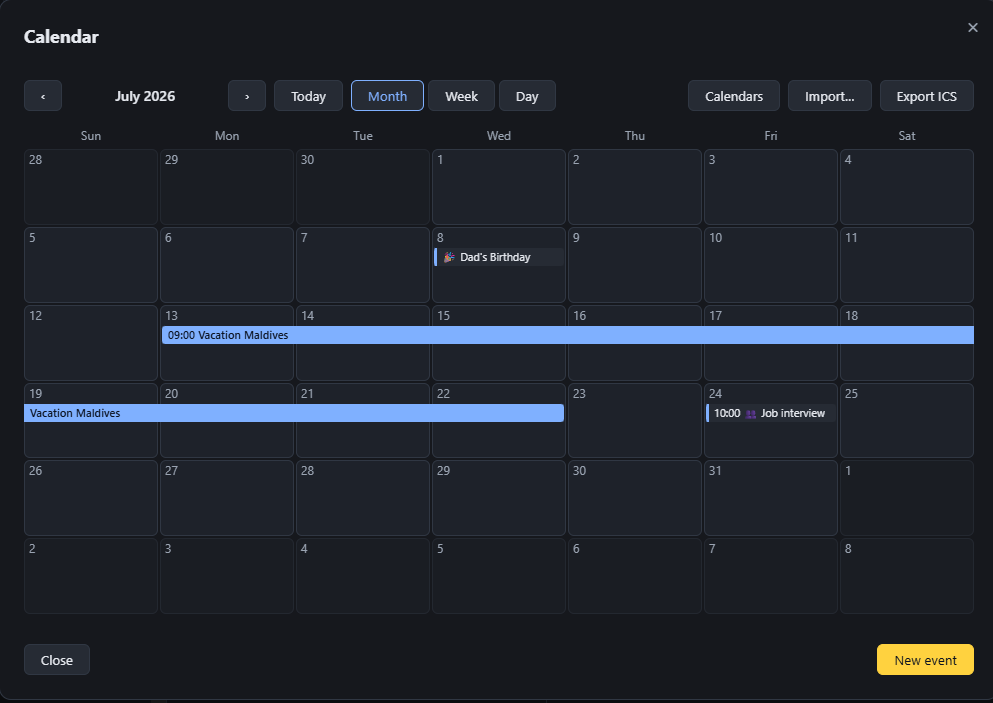

PigeonPost
PigeonPost
What is included
Mail, calendar and contacts in one window, local-first throughout. The everyday workflows that carry daily use, grouped so you can see the shape at a glance.
Calm, predictable email
A familiar three-pane window that stays out of your way. Everything sits where you expect it and nothing nags you for your attention.
The layout you know
Folders, a message list and an optional reading pane you toggle with F8. Sort by date or group a thread into a conversation, then open that conversation whole to read the exchange in one place, your own replies included. Double-click a message and it pops out into its own window.
Stays fast
The message list is virtualised, so it stays fluid in folders of tens of thousands of messages instead of stalling.
Yours to drive
Full keyboard navigation with a visible focus ring and menu accelerators. Multi-select with Ctrl or Shift, bulk delete, mark, star and move, a right-click menu and reader tabs. After ten quiet seconds with nothing open, the window settles back on the Inbox, so you always resume from a known place.
Quiet by default
No ads. No feed. Nothing reordering your inbox behind your back. The window does what you ask and then gets out of the way.
The everyday workflows
Grouped by surface: mail, calendar and contacts. Mail and its filter rules each have a page of their own.
Everything about the mail itself: multiple accounts and an optional unified mailbox, writing and sending, templates and drafts, then folders and tags.
Then reading: a sandboxed frame for message HTML, a dark theme that follows each sender's own background, the conversation view, snooze and printing.
Filter rules
Filter rules that combine as many conditions as you need, each with a NOT switch, so one rule can keep filing what you want while excluding what you do not.
Then applying a rule to the mail you already have, with a count of what it would change before it acts, plus exporting your rules to a file to import on another machine.
📅 Calendar
- Month, week and day views
- Recurring events with per-event time zones, repeating every so many days, weeks, months or years (every two weeks, say)
- Nine emoji event categories that label each event across the month, week and day views, so your week reads at a glance
- On-screen reminders at a lead you choose, from the moment the event starts out to a week before
- .ics round-trip with Outlook and Thunderbird
- Meeting invites over iTIP and iMIP with accept, tentative and decline; your reply is saved to Sent, the invitation shows everyone's current response as replies and the organiser's updates arrive and answering the same way twice warns before resending
- On a meeting you attend, another attendee's reply goes to the organiser alone, so it reads "Not known" until the organiser sends an update; only the organiser emails the attendees, so editing a meeting you were invited to never emails anyone
- Teams, Meet, Zoom and Webex join links open in your browser
- Early two-way CalDAV sync with a calendar server over an app password, server-wins on conflict
- Every date field in the app opens a themed calendar picker; typing a date directly stays first-class
📇 Contacts
- A local address book with postal addresses and birthdays, laid out as a wide grid of cards with an edit pencil on each
- People you email are added to your contacts automatically as minimal entries ready to flesh out, with a toggle to turn the collection off
- vCard import and export at full fidelity, keeping postal addresses and birthdays (round-trips with Thunderbird; single contacts with Outlook)
- CSV import and export in Outlook's column layout: names, emails, phone numbers, company and job title, birthday, home and business addresses and notes
Search that is instant and offline
Search is where the big clients are most disliked. Because your mail is already cached on your machine, PigeonPost searches a local index and answers the moment you type, with no server round-trip.
Find it now
Search everything cached: subject, sender, recipients, attachment names and the full text of mail you have opened, with operators like from:, has:attachment and dates, ranked by relevance. The index lives on your machine, so results come back instantly and work with no connection.
Private by the way it is built
Passwords live in your OS keychain, never in a database. Microsoft sign-in stores a token there instead of a password. No PigeonPost cloud sits in the path; your mail is with your provider and on your machine.
Beyond your own mail servers, the app reaches out in three ways only. It checks the project's GitHub releases shortly after launch and once a day; that request carries nothing about you and a newer release simply offers the download for your platform. It fetches a message's remote images when you choose to load them. A Microsoft account signs in through Microsoft's own servers.
The local cache itself is ordinary data on your own disk, not encrypted at rest: pair it with your OS disk encryption (BitLocker, FileVault) if you want that protection.
A look inside
One of the everyday windows you actually work in, in the dark theme.

The calendar: a multi-day event spans its days as one bar, alongside month, week and day views, reminders and emoji categories.
See it on your own mailbox
The fastest way to judge a mail client is a day of real use. Your mail stays with your provider the whole time.